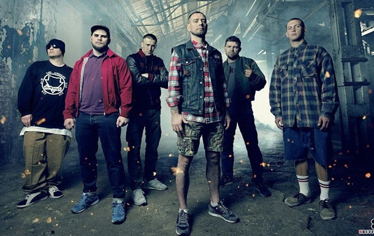

Вітаю Вас на фан-сайті гурту "Ляпіс Трубецкой". Цей сайт - курсова робота студента ІІІ курсу Київського національного університету культури та мистецтв, кафедри комп'ютерних наук, Прісича Владислава Геннадійовича.
Ляпіс Трубецкой — білоруський панк-рок-гурт.
Названий гурт на честь комічного персонажа роману Іллі Ільфа та Євгенія Петрова «12 стільців» Никифора Ляпіса, який носив псевдонім Трубецкой.
Навесні 2011 року гурт потрапив до списку заборонених у Білорусі діячів культури та мистецтва, і було скасовано низку вже запланованих концертів «Ляпіса Трубецького» на їхній батьківщині.